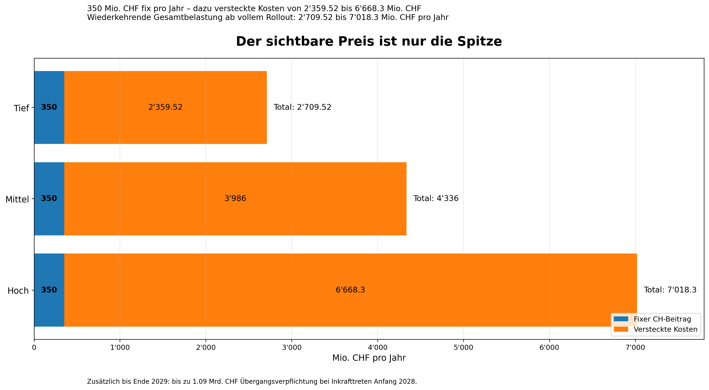
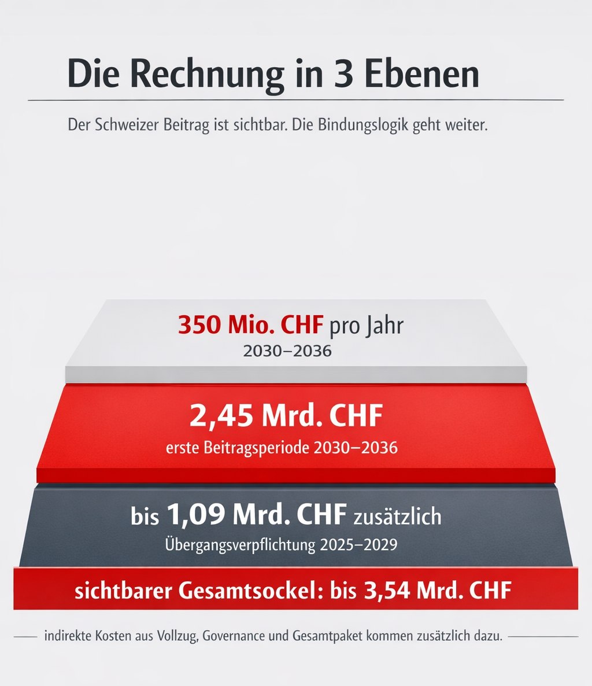
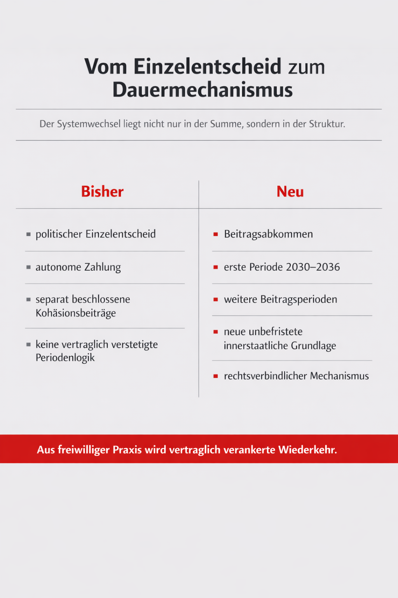
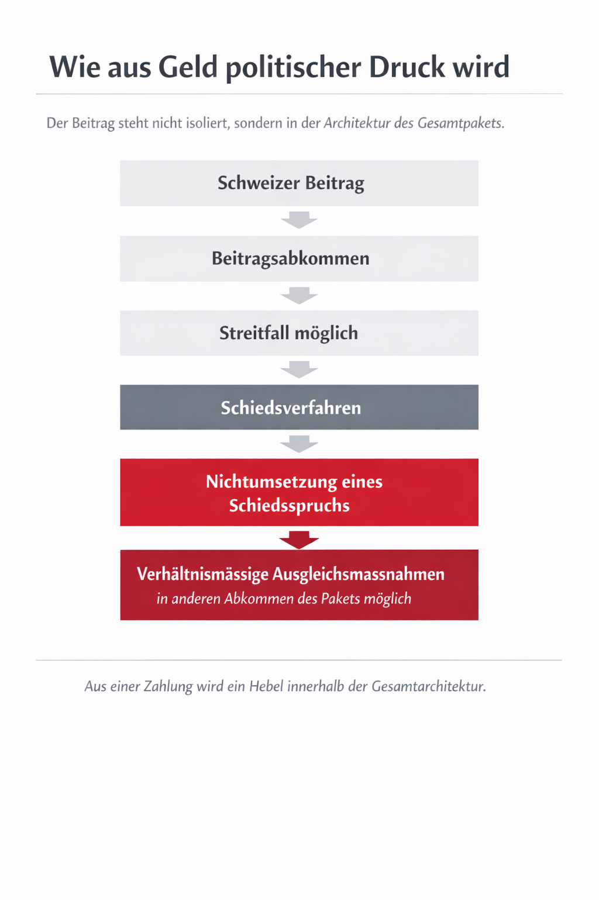
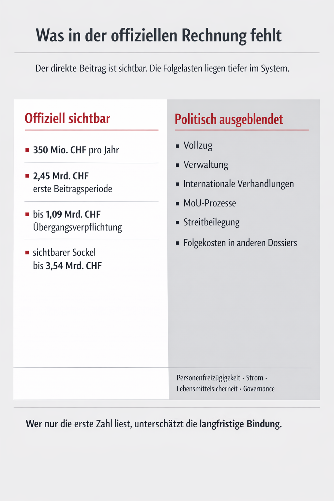

Der Schweizer Beitrag ist der sichtbarste direkte Kostenblock im Paket CH–EU. Neu entsteht ein vertraglich geregelter Mechanismus mit wiederkehrenden Beitragsperioden. Dazu kommen indirekte Kosten für Vollzug, Verwaltung und Systembindung in der Schweiz.


Der sichtbare Preis
Direkt sichtbare Kosten
Der erste Schweizer Beitrag beträgt 350 Mio. CHF pro Jahr für die Jahre 2030–2036, insgesamt also 2,45 Mrd. CHF. Davon entfallen 308 Mio. CHF pro Jahr auf Kohäsion und 42 Mio. CHF pro Jahr auf Migration. Die Umsetzungsperiode läuft über 10 Jahre von 2030 bis 2039.
Zusätzliche Übergangsverpflichtung
Für die Zeit von Ende 2024 bis Ende 2029 ist eine zusätzliche finanzielle Verpflichtung vorgesehen. Bis zum Inkrafttreten des Stabilisierungsteils sind 130 Mio. CHF pro Jahr, danach bis Ende 2029 350 Mio. CHF pro Jahr vorgesehen. Im Maximalszenario des Erläuternden Berichts ergibt das 1,09 Mrd. CHF zusätzlich.
Sichtbarer Gesamtsockel
Damit liegt der direkt sichtbare, vertraglich ausgewiesene Kostenblock bei bis zu 3,54 Mrd. CHF. Das ist der Betrag, den man offen beziffern kann. Die indirekten Kosten des Pakets kommen zusätzlich dazu (siehe unten: «Welche Kosten in der offiziellen Rechnung fehlen»).
Wer zahlt am Ende
Formell zahlt der Bund. Politisch und finanzpolitisch trifft die Langfristbindung aber die ganze Schweiz, weil Budgetspielräume auf Bundesebene enger werden und spätere Konflikte über Prioritäten unausweichlich werden. Das betrifft nicht nur Bern, sondern mittelbar auch Kantone, Gemeinden, Haushalte und Unternehmen.
Was vertraglich fix ist
Mit dem Beitragsabkommen verpflichtet sich die Schweiz, regelmässig finanzielle Beiträge zur Verringerung wirtschaftlicher und sozialer Ungleichheiten in der EU zu leisten. Politisch wird das als Beitrag zu Stabilität, Kohäsion und Migrationsbewältigung dargestellt. Für die EU ist die Logik klar: Wer am Binnenmarkt teilnimmt, soll sich auch an dessen flankierenden Lasten beteiligen. Genau deshalb verweist der Erläuternde Bericht auf die regelmässigen Beiträge von Norwegen, Island und Liechtenstein.
Für die Schweiz ist der entscheidende Unterschied: Bisher waren Kohäsionsbeiträge autonome, politisch separat beschlossene Zahlungen. Neu entsteht ein rechtsverbindlicher Mechanismus für regelmässige Beiträge, ergänzt durch ein dauerhaftes innerstaatliches Umsetzungsgesetz. Aus einer freiwilligen Geste wird damit eine vertraglich verankerte Struktur.
Der Kern des Dossiers ist deshalb nicht nur die Frage, wie viel die Schweiz bezahlt. Der Kern ist, dass sich die Schweiz mit dem Paket auf eine wiederkehrende Finanzierungslogik einlässt, die im Takt des EU-Mehrjahresfinanzrahmens weiterläuft. Das verschiebt die Debatte von «Wollen wir zahlen?» zu «Wie hoch fällt die nächste Beitragsperiode aus und wie teuer wäre politischer Widerstand dagegen?».
Warum aus einer Zahlung eine Dauerlogik wird
Bisher entschied die Schweiz politisch und autonom über Kohäsionsbeiträge. Diese wurden zwar bereits mehrfach geleistet, aber jeweils als eigenständige politische Beschlüsse und nicht als Bestandteil eines dauerhaften vertraglichen Mechanismus. Neu wird der Schweizer Beitrag im Rahmen des Pakets CH–EU verstetigt.

Konkret ändert sich dreierlei:
Erstens wird die Periodenlogik eingeführt. Der erste Schweizer Beitrag ist für 2030–2036 bereits im Abkommen vorgezeichnet. Weitere Beiträge sollen jeweils pro Beitragsperiode neu konkretisiert werden. Damit entsteht eine Dauerstruktur.
Zweitens wird die Rechtsgrundlage verstetigt. Weil das bisherige Osthilfegesetz Ende 2024 ausgelaufen ist, braucht es für die neue Logik eine neue, unbefristete innerstaatliche Grundlage. Das ist ein klarer Hinweis darauf, dass nicht mehr bloss Einzelfälle, sondern ein wiederkehrendes System geschaffen wird.
Drittens wird der Schweizer Beitrag politisch stärker mit der Gesamtarchitektur des Pakets verknüpft. Streitfälle über das Beitragsabkommen können über ein Schiedsverfahren laufen; bei Nichtumsetzung eines Schiedsspruchs sind verhältnismässige Ausgleichsmassnahmen in anderen Abkommen des Pakets möglich. Das erhöht den politischen Druck, den Mechanismus nicht nur einmal zu akzeptieren, sondern später auch weiterzuführen.

Welche Kosten in der offiziellen Rechnung fehlen

Direkte Kosten
Der erste Schweizer Beitrag ist im Erläuternden Bericht klar beziffert: 350 Mio. CHF pro Jahr für 2030–2036, also 2,45 Mrd. CHF insgesamt. Davon entfallen 308 Mio. CHF jährlich auf Kohäsion und 42 Mio. CHF jährlich auf Migration. Die Umsetzungsperiode dauert bis 2039.
Hinzu kommt die einmalige zusätzliche finanzielle Verpflichtung für die Übergangszeit Ende 2024 bis Ende 2029. Je nach Zeitpunkt des Inkrafttretens kann diese in der Maximalannahme 1,09 Mrd. CHF erreichen. Das ist keine politische Schätzung aus dem luftleeren Raum, sondern die ausdrücklich genannte Rechnung des Erläuternden Berichts.
Indirekte Kosten
Auf dieser Seite steht der direkte Finanzblock im Vordergrund. Politisch wichtig ist aber: Der Schweizer Beitrag ist nur der sichtbare Teil der Rechnung. Schon das Beitragsabkommen ist mit langfristigem Vollzug, Verwaltungsaufwand, internationalen Verhandlungen, MoU-Prozessen und Streitbeilegungsmechanismen verbunden. Zusätzlich löst das Gesamtpaket weitere indirekte Kosten aus, die auf anderen Dossierseiten sichtbar werden, etwa bei Personenfreizügigkeit, Strom, Lebensmittelsicherheit und Governance.
Bandbreite und politische Lesart
Die direkte Zahl ist klar: bis 3,54 Mrd. CHF sichtbar. Politisch ist aber entscheidend, dass sich der Beitrag nicht als abgeschlossener Einmalbetrag lesen lässt. Er ist der Einstieg in eine Logik, die über Beitragsperioden, MoU-Verhandlungen und den gesamten Binnenmarktrahmen weiterwirkt. Wer nur auf die erste Zahl schaut, unterschätzt die langfristige Bindung der Schweiz.
Wer zahlt?
Formal handelt es sich um Bundesausgaben. Praktisch binden diese Beträge aber den finanzpolitischen Spielraum der Schweiz auf Jahre hinaus. Jeder zusätzliche gebundene Milliardenblock auf Bundesebene verschärft spätere Verteilungskonflikte. Auch wenn die Beiträge nicht direkt im EU-Budget versickern, sondern in Partnerstaaten umgesetzt werden, bleibt die Belastung für die Schweiz real.
Was Befürworter einwenden
Aus Sicht des Bundesrats und der Befürworter schafft das Beitragsabkommen einen klaren, vorhersehbaren Rahmen für den Schweizer Beitrag. Das erhöht nach offizieller Lesart die finanzielle Planbarkeit und stärkt die Beziehungen zur EU sowie zu den Partnerstaaten. Zudem betont der Erläuternde Bericht, dass die Mittel nicht direkt ins EU-Budget fliessen, sondern in Partnerstaaten eingesetzt werden und die Schweiz thematische Schwerpunkte sowie eigene Projektpartner einbringen kann.
Ein weiterer Vorteil aus Bundesratssicht ist die politische Stabilisierung des bilateralen Wegs. Die Verstetigung des Schweizer Beitrags gilt im Paket als Element, mit dem die Beziehungen zur EU berechenbarer gemacht werden sollen. Wer den bilateralen Weg möglichst konfliktarm fortsetzen will, kann darin einen Nutzen sehen.
Auch im Vergleich mit Norwegen wird argumentiert, dass die Schweiz relativ weniger bezahlt als ein EWR-Staat mit deutlich umfassenderer Binnenmarktteilnahme. Dieser Vergleich wird im Erläuternden Bericht ausdrücklich gezogen.
Was das für die Schweiz bedeutet
Der zentrale Nachteil liegt im Systemwechsel. Bisher konnte die Schweiz Kohäsionszahlungen autonom beschliessen oder eben nicht. Neu wird ein regelmässiger, rechtsverbindlicher Mechanismus aufgebaut. Das schafft Erwartungsdruck für jede nächste Beitragsperiode.
Zweitens wächst das politische Erpressungspotenzial. Streitfälle zum Beitragsabkommen können über ein Schiedsgericht laufen. Wird ein Schiedsspruch nicht umgesetzt, sind Ausgleichsmassnahmen in anderen Abkommen des Pakets möglich. Damit wird der Schweizer Beitrag nicht bloss zu einer Zahlung, sondern zu einem Hebel innerhalb der Gesamtarchitektur.
Drittens entsteht eine dauerhafte finanzielle Erwartungslinie gegenüber der Schweiz. Schon in den Verhandlungen hatte die EU laut Erläuterndem Bericht ursprünglich einen Beitrag von über 520 Mio. CHF pro Jahr gefordert. Dass man sich auf 350 Mio. geeinigt hat, ändert nichts daran, dass der politische Ausgangspunkt in Brüssel klar höher lag. Das ist ein Warnsignal für spätere Perioden.
Viertens verschiebt sich die Debatte in der Schweiz: Nicht mehr die Grundsatzfrage «zahlen oder nicht zahlen?» steht im Vordergrund, sondern die Frage, wie die nächste Beitragsrunde ausgestaltet wird, ohne das Gesamtpaket zu gefährden. Gerade dadurch kann aus formeller Souveränität faktisch gebundene Politik werden.
Der Schweizer Beitrag ist ein gutes Beispiel dafür, wie im Paket formell nationale Entscheidungsrechte bestehen bleiben, politisch aber der Handlungsspielraum enger wird.
Die Schweiz bleibt zwar innerstaatlich zuständig für Gesetzgebung, Budgetierung und Referendum. Aber extern entsteht ein Rahmen, in dem die Nichtweiterführung oder Blockierung des Beitrags nicht folgenlos bleibt. Über Streitbeilegung und mögliche Ausgleichsmassnahmen wird der Beitrag in die institutionelle Architektur des gesamten Pakets eingebettet.
Souveränitätsrelevant ist auch die neue Verstetigung. Ein autonomer Beitrag kann politisch begrenzt, angepasst oder ausgesetzt werden. Ein regelmässiger, rechtsverbindlicher Mechanismus mit periodischer Wiederkehr erzeugt dagegen Pfadabhängigkeit. Je länger dieses System läuft, desto grösser werden Erwartung, internationaler Druck und politische Kosten eines Ausstiegs.
Der Schweizer Beitrag ist die sichtbarste Rechnung im Paket CH–EU. Man kann ihn leicht beziffern: bis 3,54 Mrd. CHF. Gerade deshalb ist er politisch so wichtig. Aber die eigentliche Bedeutung liegt tiefer. Die Schweiz bezahlt nicht bloss einen grossen Betrag. Sie akzeptiert eine Logik regelmässiger Beiträge, die an den EU-Rahmen gekoppelt ist und über Streitbeilegung politisch abgesichert wird. Das verändert nicht nur die Finanzen, sondern auch den Spielraum der Schweiz.
Heute ist der Schweizer Beitrag eine Zahl.
Morgen ist er ein Mechanismus.
Und Mechanismen sind für die Schweiz meist gefährlicher als einmalige Beträge.
Quellen und Vertiefung
Die Angaben auf dieser Seite stützen sich in erster Linie auf das Abkommen, Protokolle und Erklärungen, insbesondere auf das Beitragsabkommen mit Art. 18 sowie Anhang II und Anhang III.
Beitragsabkommen (Art. 18, Anhang II und III): eda.admin.ch – Paket CH–EU
Massgeblich ist zudem der Erläuternde Bericht des Bundesrates vom 13. Juni 2025, vor allem der Abschnitt zu den Finanzbeiträgen / dem Schweizer Beitrag.
Erläuternder Bericht des Bundesrates (13. Juni 2025): eda.admin.ch – Erläuternder Bericht
Ergänzend berücksichtigt wurden das offizielle Factsheet Finanzielle Beiträge sowie die Übersicht Abkommen, Protokolle und Erklärungen.
Factsheet Finanzielle Beiträge / Übersicht Abkommen: eda.admin.ch – Paket CH–EU
Die politische und fiskalische Einordnung erfolgt als eigene Analyse auf Basis dieser Primärquellen; zusammengefasst ist sie im Kostenanalyse Paket CH–EU März 2026.